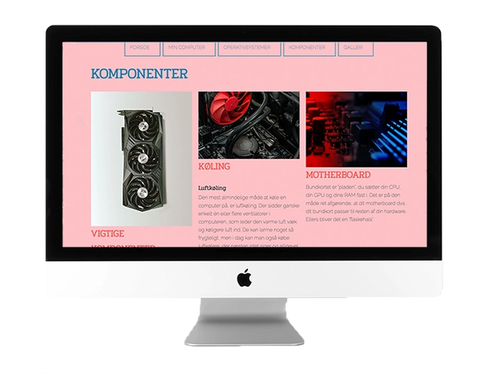

Website
På tema 2 lærte vi at udarbejde en responsiv hjemmeside. Formålet var at arbejde med grid og flexbox til opstilling, der gav grundlæggende læring om html og css. Ud fra det udleverede materiale arbejdede vi også med komprimering af billeder. I opgaven blev farver og fonte valgt tilfældigt. Det gav mig et klart indblik i vigtigheden af hvilke udtryk farver og fonte er med til at give.
Besøg hjemmesiden
